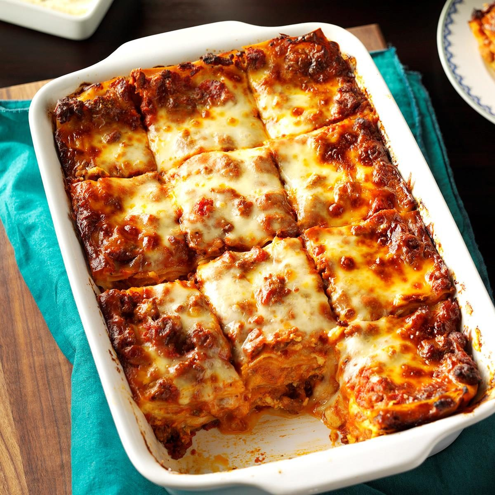

Lasagna

Description
Lasagna is a type of pasta.
It has layers of meat, pasta plates and cheese.
Ingredients
- One pound ground meat
- One onion
- One clove of garlic, crushed
- One can of crushed tomatoes
- One can of tomato sauce
- Two cans of tomato paste
- 1/8 teaspoon of sugar
- Spices and seasoning: fresh parsley, dried basil leaves, salt,
Italian seasoning
- Lasagna noodles
- Cheese
Steps
-
Cook and stir ground meat until browned and crumbly.
Add onion and cook until translucent.
-
Stir in crushed tomatoes, tomato sauce, your seasoning, garlic and sugar.
Reduce heat to medium-low and simmer, stirring occasionally, for 30 minutes.
-
While the sauce is simmering, bring a large pot of lightly salted water to boil.
Cook lasagna noodles in the boiling water, stirring occasionally, until tender yet firm to the bite.
Drain and set aside.
-
While the noodles are cooking, preheat the oven to 190 degrees Celsius.
-
Assemble lasagna: Spread a spoon or two of the sauce over the bottom of the baking dish.
Place the noodles over the sauce to cover it.
Repeat the layers, until there is no more sauce left.
Then put the cheese on top.
-
Bake in the preheated oven for 30 to 40 minutes.
-
Remove from the oven and let stand for 10 minutes before cutting and serving.